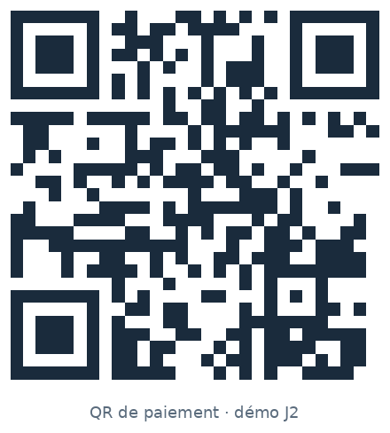

2.1 · Principes & typologies
Principes & typologies QR
Définition
Qu’est-ce qu’un QR code ?
QR = Quick Response (« réponse rapide ») — code-barres 2D inventé pour être lu vite, même abîmé ou sous angle. Il encode une chaîne de données : texte libre, URL, contact, identifiant technique, ticket, configuration… — pas uniquement un paiement.
Un QR de paiement est un cas d’usage : le même support optique, mais un payload compris par une app (bancaire, wallet, marchand) pour initier ou recevoir une opération. Ce n’est pas « un seul objet » : plusieurs axes changent le SI et le risque.

Payload
Le payload est la charge utile portée par le QR : les octets / caractères que le lecteur récupère après scan. Ça peut être un simple texte, une URL, un JSON… En paiement, ce payload est structuré pour dire qui créditer, combien, en quelle devise, avec quelle référence — et comment traiter l’opération. Le QR n’est que le support ; le payload, c’est le contenu.
Schéma du payload d’exemple
Format pédagogique (pipe) · équivalent simplifié d’un QR statique
PAY|MID:TRAIN|AMT:|CUR:XOF|REF:STAT|POI:11
PAY
Objet
Indique un QR de paiement (pas un lien web générique).
MID:TRAIN
Marchand
Identifiant commerçant / compte à créditer.
AMT:
Montant
Vide → le payeur saisit après scan (typique du statique).
CUR:XOF
Devise
Code monétaire (ici franc CFA).
REF:STAT
Référence
Libellé / référence métier côté acceptation.
POI:11
Mode d’initiation
11 = statique (convention type EMV) ;
12 = dynamique.
En production, le même rôle est souvent porté par un payload TLV (ex. EMV QR) : mêmes idées (IDs, montant, devise, CRC…), autre syntaxe.
Quatre axes à maîtriser — chaque couple change ce payload et le SI autour.
Modes monétiques
Statique vs dynamique
Statique : contenu fixe (souvent ID marchand). Dynamique : payload généré pour une opération (montant, référence, TTL).
Statique · Dynamique
Qui porte le montant et la référence ?
Modes monétiques
Push vs pull
Qui présente le QR ? Pull : le payeur scanne le QR du bénéficiaire. Push : le payeur présente un QR scanné par le marchand / agent.
Pull · Push
Sens du scan — qui lit le code
Modes monétiques
Closed-loop vs open-loop
Closed : un écosystème (enseigne, un wallet). Open : interopérable entre banques / wallets / schemes.
Closed · Open
Périmètre d’acceptation
Modes monétiques
Bancaire vs wallet
Vue UX / canal : app banque vs app wallet. Le détail technique wallet est reporté au Jour 4.
Bancaire · Wallet
Même logique d’auth — canal UX différent
Ne pas confondre « wallet UX » (J2) et architecture wallet / token / SE (J3–J4).
Rôle
Que retient le SI ?
Choix produit
- Statique / dynamique → QR engine ou non
- Push / pull → qui génère, qui scanne
Choix écosystème
- Closed / open → interop & gouvernance
- Bancaire / wallet → canal UX, rails derrière
Ancrage
Cas pratiques
Cas 1 — Sticker magasin
- Souvent statique + pull
- Contrôle anti-fraude côté montant ?
Cas 2 — Caisse qui affiche
- Souvent dynamique
- TTL / unicité de la référence
Clarification
Ce que ce n’est pas
Risque différent (montant saisi, QR clonable) — règles produit, pas un verdict binaire.
Qui présente le code change le parcours caisse et le contrôle d’identité.
Ici = canal UX. Token / SE / NFC = J3–J4.
Notes formateur — questions SI
- Chez vous : stickers statiques ou QR dynamiques en caisse ?
- Quel TTL et quelle unicité sur les QR dynamiques ?
- Closed ou open dans votre périmètre national ?
Check de fin de bloc
- 4 axes verbalisés
- Exemple statique et dynamique
- Push ≠ pull
- Closed / open et bancaire / wallet situés